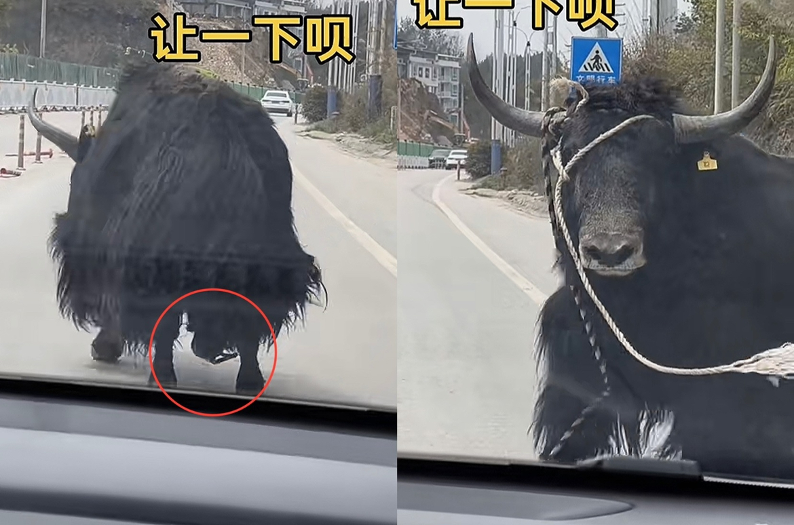

记得最早的一批穿越者都是想尽办法回家 有的血祭的世界的，有打穿一个个位面的，有建立组织的寻找的，有游弋时间长河回去的等…… 然后作者发现这样太考验笔力了，就逐渐变成了现在的孤儿式穿越[泪奔]
所以之前的穿越者拼了命也要回去，因为他们有家人，现在的穿越者都是孤儿起步[黑脸]
你以为的穿越后：醉卧美人膝，醒掌天下权。御剑天地，长生不死。 实际上：老子要回家！[微笑] 个人见解，友好交流
老妈还会以为是自己煮饺子煮的慢，没让你吃上
比起空间上的距离，时间上的跨度更让人绝望 “穿越者从未离开故乡”
像极了在公园乱跑的我
后排车:第一台车到底在干嘛？今天怎么那么堵？第一台车:我在看牛跳舞[大笑][大笑][大笑]
它自己踩了自己的绳子，导致头没抬起来，[捂脸]它回头瞪司机好久！[捂脸][捂脸][捂脸] 
“妈妈，你是不是傻啊”
现在明白为什么以前长辈喜欢看后辈表演了 [呆无辜]
这声音一出来我就知道你天生就是吃这口饭的，有考虑去声优行业发展下吗[流泪]
千多万朵压枝低～
长得好标准的一张脸啊！鼻子是鼻子，眼睛是眼睛，嘴是嘴的！[求求了]
你也好～
诗琳通公主穿的像普通老太太一样就来了~ 一辈子都和中国联系在一起
朴男他们头像都黑了，他真没了？
你俩第一名，上台领奖[红包]
老师真的好棒啊！！完全没有想到这方面
喜欢这个老师，无论是带手表还是自行车，都会从学生的角度考虑问题
吾日三省吾身
教育得本质是生命力的守护
当初凌博士这个牌子刚出来的时候，他没告诉我是真博士啊 ， 好长一段时间我都以为这是个营销的三无产品
博士博士的 我买成温博士了
救了本干眼症命的玻璃酸钠也是他发明的[流泪][流泪]
凌博士玻尿酸之父
凌博士是真的大佬，他是山大博导，我同学做梦都想选他做导师，听说光专利就有100多项，特别牛！！
看到就是躲过，愿我全家平安健康，一帆风顺[感谢][感谢][感谢][感谢][感谢]
独自一人时，是兵是将，无依无靠时，自己就是千军万马！
太监来叫我发现我还没睡
这是明君才干的事，你跟朕一个昏君说什么
太监3点来叫醒的时候我已经下旨杀了[愉快]
那我把菜全吃了不就谁都不知道我喜欢吃什么菜了[憨笑]
[微笑]我传位给太子 我开心超人
那我决定模仿明神宗朱翊钧，三十年不上朝
张根源在全球最帅排42名[憨笑]
就你了，开睡
Read more: